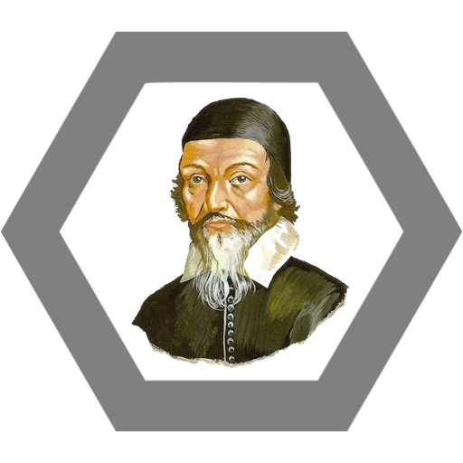

Hidden Matěj. Pepiny nenávist k autoritě a neskrývané levičácství protivníka tak zmate, že neví, jestli právě mluví s Matějem nebo Josefínou. Zmatení trvá, dokud Pepina nezačne šířit reformátorské myšlenky v oblasti školství.

Aura intelektuálna
Pepina kolem sebe velmi sveřepě vytváří auru jakési inteligence a dojmu, že ví více než ostatní. +5 intelligence
"Malý ten, kdo zná jen malý cíl."
Pepina si nastaví nějaký cíl, který se může nezávislému pozorovateli zdát nereálný. Success: +50 exp, Failure: +1000 rage
Silná tkáň
Pepina nenosí výztuž do zbroje, tím pádem získává obratnost na určitých místech, kterou dokáže velmi efektivně použít proti svým protivníkům. Evasion +20%, 10% chance to stun
Kapitánka Demo
Pepina vychrlí na protivníka smršť slov. Ty spolu zdánlivě nijak nesouvisí, ale přesto dokážou konsternovat protivníka a odkázat ho do patřičných mezí/vzdálenosti. Knocback 5m

Ulti
Reformation. Pepina absorbuje duchovní sílu Jana Ámose Komenského, která ji dodává sílu k realizaci vizionářských myšlenek. Tím pádem cokoli a kohokoli, co se jí nelíbí, postaví na hlavu.